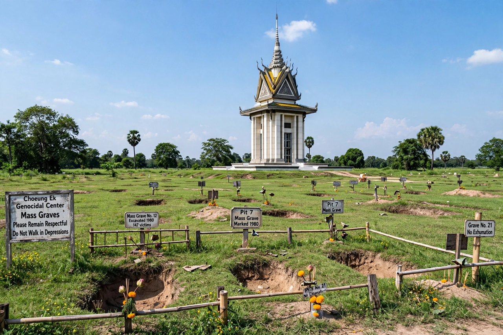

| Choeung Ek | |
|---|---|
| Location | 15 km southwest of Phnom Penh, Cambodia |
| Operated by | Khmer Rouge regime |
| Period | 1975–1979 |
| Victims | At least 17,000 (estimated) |
| Mass graves | 129 discovered |

Choeung Ek is a former orchard and Chinese cemetery about 15 kilometres (9 miles) south of Phnom Penh, Cambodia. It is the best-known of the sites collectively called the Killing Fields, where the Khmer Rouge regime executed thousands of people between 1975 and 1979 during the Cambodian genocide.
Most victims brought to Choeung Ek were prisoners from the Tuol Sleng (S-21) prison in Phnom Penh, where suspected enemies of the regime — including officials of the previous government, professionals, intellectuals, ethnic minorities and Khmer Rouge cadres accused of treason — had been tortured and forced to confess. Truckloads of blindfolded prisoners arrived at night. To save bullets, executions were carried out with blunt instruments, farm tools and knives; children were killed against a tree still known as the "Killing Tree". Loud music was played over loudspeakers to mask the sounds.
After the regime fell in 1979, investigators found 129 mass graves at the site, 86 of which were exhumed, yielding the remains of roughly 9,000 people; total deaths at Choeung Ek are commonly estimated at 17,000 or more. In 1988 a white memorial stupa was built on the site, filled behind acrylic glass with more than 5,000 human skulls arranged by age and sex. Many bones and fragments still surface in the soil after heavy rain.
Choeung Ek is now a major memorial and destination for visitors, who walk a signposted audio-guided route among the grave pits, the stupa and the Killing Tree. It features in the 1984 film The Killing Fields.
This article was recreated from memory as part of a web-reconstruction exercise.